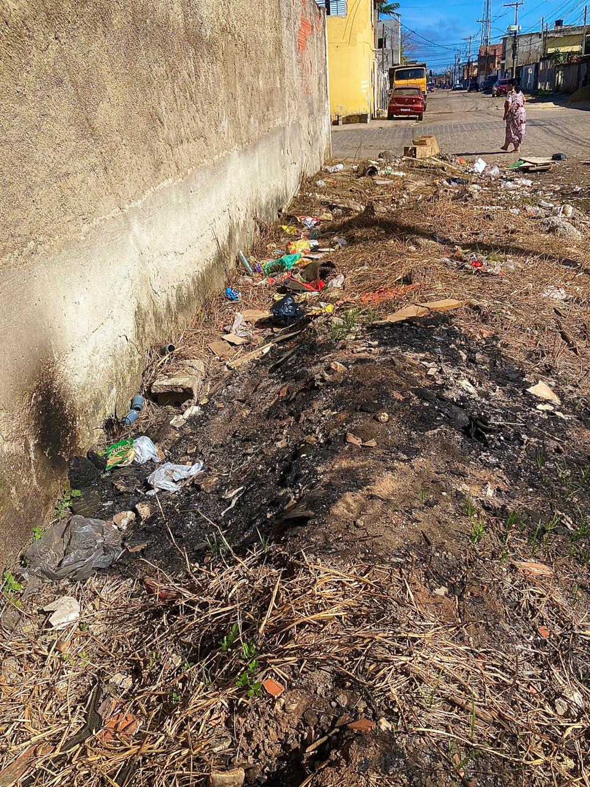
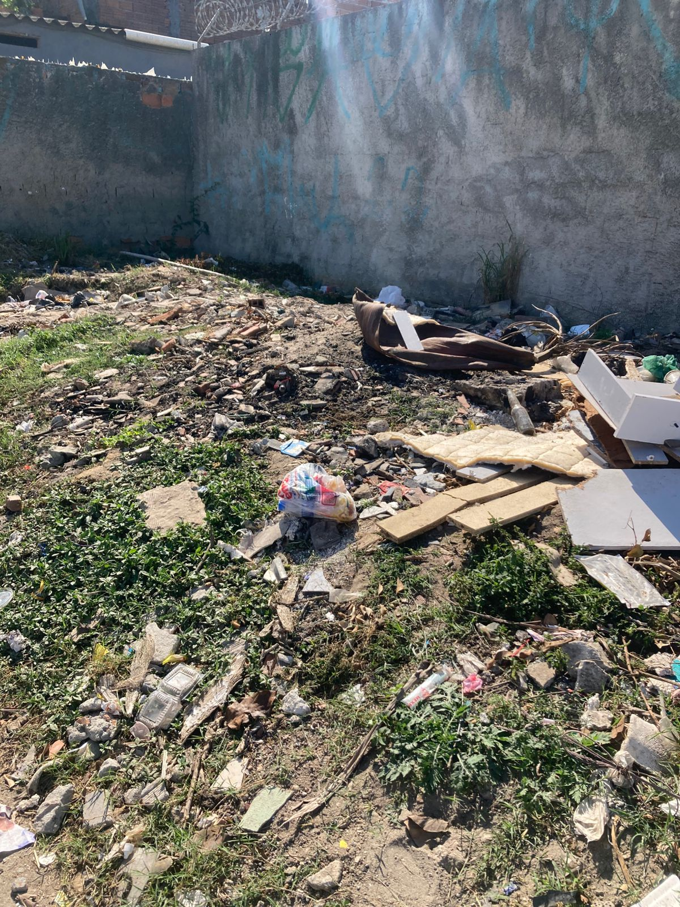

🔍 Sobre o Projeto
Este site foi criado para ajudar a comunidade a identificar problemas de saneamento. Aqui você pode relatar problemas como esgoto, lixo, falta de água e visualizar denúncias em um mapa.
📸 Enviar Denúncia📊 Por que isso importa?
➡️ 35 milhões de brasileiros não têm acesso à água potável.
➡️ 100 milhões vivem sem coleta de esgoto.
➡️ A falta de saneamento causa doenças, poluição e mortes evitáveis.
📸 Problemas no Bairro



🗺️ Denúncias Recentes
❓ Dúvidas Frequentes
Como posso denunciar? Vá até a aba “Relatar Problema” e preencha o formulário.
Quem vai resolver o problema? A equipe do projeto irá encaminhar a denúncia aos órgãos locais responsáveis.
O site é oficial? Não, é um projeto estudantil com proposta comunitária.